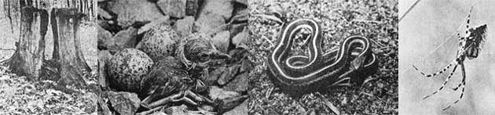
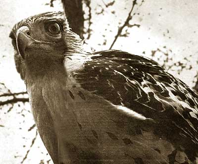

You Can Make Money In The Country With A Camera
Wildlife photographer shares the secrets of the trade in this beginner's guide, including equipment, preparing work for submission, markets, and publication contact information.
By the Mother Earth News editors
May/June 1975
SUCCESSFUL WILDLIFE PHOTOGRAPHER STEPHEN J. KRASEMANN OF HARTFORD, WISCONSIN SAYS . . .
All you folks who've moved back to the land have one thing in common: You live surrounded by the woods and fields. To find wild creatures in abundance, you need only to step out the door . . . and that fact can be profitable as well as pleasant.
Remember the bird that nested in the front yard last year, or the snake you chanced upon in the garden, or that beautiful spider web down in the meadow? Well, all of them could probably have been turned into moneymakers.
And just how do you cash in on a spider? By taking its picture, that's how. Every year many people earn extra income from freelance nature photography . . . and a few of them prove talented enough to make the taking of wildlife pictures a full-time occupation. Such photos portray many subjects-birds, mammals, insects, plants, flowers, and scenic landscapes-and are bought in huge quantities by a wide variety of markets. An observant eye for the outdoors, plus a reasonable level of skill with a camera, could very well bring you the extra income every homestead needs.
EQUIPMENT
A start in nature photography doesn't require an outlay of hundreds and hundreds of dollars. To begin building a portfolio you need only a camera, lenses, and film. Your equipment does, however, have to meet certain' standards if you want your wildlife pictures to be of salable quality.
First, the camera must be able to focus clearly. If a finished photo isn't really sharp, few markets will have any use for it. Second, you must be able to vary the amount of light that reaches the film. This can be done either by means of variable shutter speeds or by a diaphragm in the lens that opens and closes to control the entry of light. Both methods are satisfactory.
A third "must" is that the camera use film no smaller than 35mm (half-frame pictures in this size are too small for 99 percent of all possible buyers).
When you choose your camera you should consider two additional features which aren't absolute requirements but are very strongly recommended. One is an interchangeable lens mounting. This allows the use of telephoto equipment to capture shots of wary birds and animals . . . and, in addition, lets you utilize bellows, extension tubes, and other close-up apparatus for ultradetailed pictures of small creatures such as insects.
It's also advisable to select a camera of the SLR (single lens reflex) type, which shows in the viewfinder exactly the picture you're about to take. This is an untold advantage when you're working with either telephoto lenses or close-up equipment.
Finally-if you're not already an experienced photographer-some good books and magazines on camera technique are required reading until you've learned the basics of picture taking. (The works of Andreas Feininger-among them The Complete Photographer, 1965, $9.95; The Creative Photographer, 1955, $9.95; and Basic Color Photography, 1972, $7.95, all published by Prentice-Hall, Inc. - are highly recommended. Eastman Kodak produces an excellent series of guides which are available at around $1.50 each through camera stores . . . and while you're visiting such a shop, try talking to the proprietor about your problems. He may be able to give you some sound advice. Instruction in photography is offered by some high schools and technical schools . . . and, unofficially, by many practicing photographers who love their art and are glad to help a beginner. -MOTHER)
HOW TO PREPARE WORK FOR SUBMISSION
Photos offered for sale must, of course, be in sharp focus and correctly composed and exposed. Each must bear your name (your address isn't necessary) and a short informative caption identifying the subject and the area in which the picture was taken. The label need not include technical details such as exposure times . . . and do not date your work, as this can sometimes limit its acceptability.
Black and white prints may be glossy or matte, on single or double weight printing paper, and should be 8" X 10" for most markets. Smaller sizes are undesirable.
The majority of markets will not accept color prints. Instead, when they buy color, they expect transparencies (slides). Such transparencies can be any size from 35 mm to 8" X 10" (larger sizes are more acceptable to some buyers). Glass or metal mounts should be avoided.
Before you send your pictures to any market, it's a good idea to write the photo editor a query letter describing your subject matter and asking whether he'd like to review your work for possible publication. Always include a self-addressed, stamped envelope for his reply.
Likewise, when you first mail your work to any potential buyer, always include return postage or you may never see the pictures again. Publishers can't afford to pay for returning unusable materials and are not responsible for doing so.
MARKETS
In the field of photography, a knowledge of marketing is as essential as the taking of the pictures and there are several possible approaches by which the freelancer can sell photos: through stock photo agencies or individual representatives, or direct to magazine and book publishers (or to various less wellknown markets).
[1] A stock agency won't buy your photos . . . but will accept all the good wildlife pictures you can provide, and sell them to a variety of markets you'd have no way of reaching in quantity: textbook and encyclopedia publishers, national advertising agencies, and foreign buyers. All you have to do is send the agency salable work. The people there will do the rest. This is probably the best approach for the photographer who doesn't want to actively pursue the marketing of his or her pictures.
Most stock agencies pay you 50 percent of the price received from the sale of your work . . . anything from $20.00 for a black and white print to $2,000 for a color transparency that is used in advertising.
One good point about dealing with such a firm is that photos are never sold outright but always remain the property of the photographer. The client buys only reproduction rights, and returns the actual picture to the agency after making the necessary plates. Thus one photo can be-and often is- marketed a number of times.
The following are some of the larger photo agencies.
Photo Researchers, Inc., 60 East 56th Street, New York, New York 10022
Freelance Photographers Guild, Inc., 251 Park Avenue South, New York, New York 10010
Audubon Society, 950 Third Avenue, New York, New York 10022
[2] Photos can also be sold through an individual representative who markets the work of just a few established photographers and makes his living by taking a small commission on each sale. Such an agent will be interested in handling your pictures only if you take them full time (since his income depends on your productivity) . . . and he'll probably decline to deal with you unless you've had work published (as some guarantee of salability).
The Society of Photographer and Artist Representatives will send you a list of addresses and phone numbers if you want to approach representatives with your portfolio. SPAR's address is 360 East 55th Street, New York, New York 10022.
[3) If you prefer to market your work yourself, instead of employing an agent, you'll probably think first of approaching magazine and book publishers. This is an obvious move since such markets do buy a great deal of material and very large publishers sometimes pay a lot of money for a single photo. The only trouble, of course, is that everyone else knows these facts of life too . . . so you'll be competing head-on with the best photographers in the business when you approach the bigger periodicals and book houses.
If that thought doesn't scare you off, here are several of the more prominent wildlife magazines:
National Wildlife and International Wildlife, 534 North Broadway, Milwaukee, Wisconsin 53202
Ranger Rick's Nature Magazine, 1518 Walnut Street, Philadelphia, Pennsylvania 19102
Audubon Magazine, 950 Third Avenue, New York, New York 10022
Natural History, 79th Street and Central Park West, New York, New York 10024
Wilderness Camping, 1654 Central Avenue, Albany, New York 12205
Besides the above-which deal only with subjects in the field of natural history-there are many general interest publications that use feature stories on wildlife (and offer somewhat easier pickings for the beginning photographer).
[4] You should also be aware of various little-known markets which don't pay as well as the prestige publications but which are usually much easier to make a sale to. Denominational magazines, local businesses, and your hometown newspaper are good examples.
Then again, you might consider contacting the National Wildlife Federation Library, 1412 Sixteenth N.W., Washington, D.C. 20036. This organization acquires photos for its collection, pays a fee on purchase, and sends an additional payment each time a picture is used for publication. NWFL does, however, buy full rights (i.e., ownership of the material).
I strongly recommend some sources of further information on magazines and publishers (addresses, types of photos purchased, and rates of payment). The most expensive reference ($10.95)and also the most helpful-is the current edition of Writer's Market. This guide, published yearly by Writer's Digest, 9933 Alliance Road, Cincinnati, Ohio 45242, lists hundreds of markets for the writer and photographer.
You'll also find valuable items in two monthly magazines: Writer's Digest (address above) and The Writer, 8 Arlington Street, Boston, Massachusetts 02116. Each issue contains up-to-date information on both old and new markets and the publications frequently carry articles that will help you improve your work.
Yes, there are many markets for good wildlife photography. So, the next time a bug blunders into the cabin, stop a minute and take the rascal's picture before you toss him out the door. It just might pay!
|
 |
 |
 |